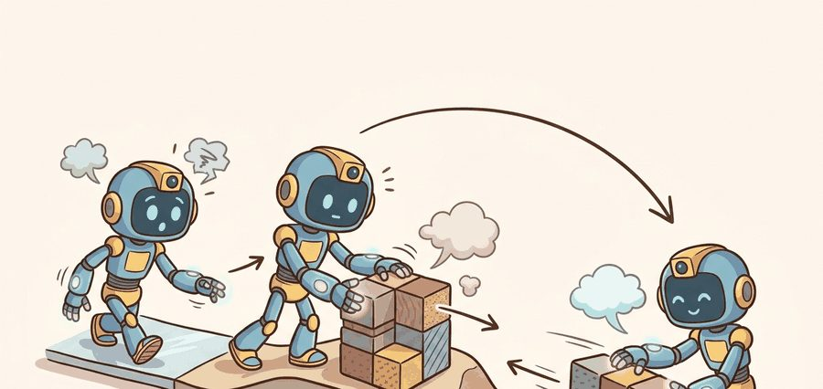
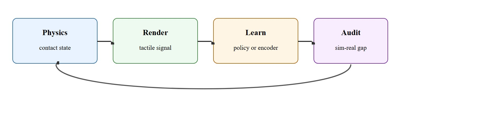
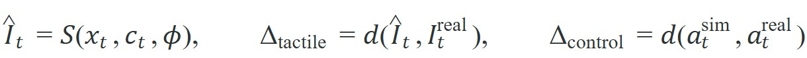

"Simulated touch is a promise about which contact features will survive reality."
A Tactile Sim Engineer

This section assumes familiarity with rigid-body contact dynamics from section 6.3 and with the physics simulators (MuJoCo, Isaac Lab) introduced in sections 11.2 and 11.4. The sim-to-real gap framing developed here is extended in section 20.1, which covers domain randomization strategies for reinforcement-learning policies, and the visuo-tactile pretraining pipeline that consumes simulated tactile data is developed in section 44.4.
A robot hand pressing a grape must sense the moment skin begins to yield, yet running that experiment a million times in the real world destroys every grape. Tactile simulation now makes it possible to train contact-rich policies entirely in silico, and Isaac Lab's sensor plugins can synthesize optical gel images and normal-force maps for vision-based tactile sensors like GelSight and DIGIT fast enough to fill a replay buffer overnight. The catch, shown in Figure 44.3A, is that no simulator preserves all of tactile reality equally well: image fidelity and force fidelity pull in different directions. By the end of this section you will be able to choose a simulator whose abstractions match what your task actually measures, and audit the sim-to-real gap at the control level, not just the pixel level.
Two tactile simulators can render the same grape-pinch: one produces a gorgeous gel image yet reports a squeezing force off by a factor of three, the other looks crude yet nails the instant the skin yields, and only one of them will teach your policy to stop before the fruit bursts. That split runs through every tactile simulation style covered here: rendering-based optical tactile simulators, mechanics-focused deformation models, and integrated simulators in frameworks such as Isaac or MuJoCo extensions.
It ties simulation, data generation, and sim-to-real transfer by making the sensor model explicit rather than hiding it behind a generic domain-randomization story.
By the end of this section you should be able to do three concrete things: name which of the two gaps, frame-level or control-level, matters for a given task; pick between an optical renderer (TACTO-style) and a mechanics-focused or integrated simulator (MuJoCo, Isaac Lab) based on which contact quantity your downstream policy consumes; and run the Tactile Sim Gap Check algorithm below on paired sim and real episodes to decide whether a simulator is trustworthy for that task, rather than trusting it because the rendered frames look convincing.
A tactile simulator is only useful if you can state which contact quantities it preserves well enough for the downstream policy or estimator you care about.
A common mistake is assuming that a more physically detailed or visually realistic tactile simulator is always preferable, and therefore that upgrading to a higher-fidelity simulator will improve policy transfer. This is wrong in the embodied AI context because realism is not a single axis: a simulator that accurately reproduces gel deformation images may completely misrepresent normal-force magnitudes, and vice versa. The correct mental model is that fidelity is always task-relative: the only simulation properties that matter are those that drive the specific contact signals your downstream policy or estimator actually consumes. Choosing the most visually convincing simulator for a force-magnitude task, or the most mechanically accurate one for a geometry-localization task, wastes compute and can introduce misleading error signals that no amount of domain randomization will correct.

Figure 44.3.1 traces the loop this section reasons about: physics produces a contact state, rendering turns it into a tactile signal, a policy or encoder learns from that signal, and an audit step feeds the sim-to-real gap back to the physics and sensor models. Many tactile simulators split the problem into rigid-body contact from a base physics engine and sensor rendering or deformation synthesis on top. That makes them fast, but it means their guarantees are task-specific rather than universal.
For optical tactile sensors, image realism can matter more than exact force fidelity if the downstream model reads local geometry from marker motion or shading. For force or compliance tasks, the opposite can be true.
The relationships below make this precise: a sensor model $\mathcal{S}$ turns the simulator state $x_t$, contact state $c_t$, and sensor parameters $\phi$ into a synthetic tactile frame $\hat I_t$. The frame-level gap $\Delta_{\text{tactile}}$ measures distance $d$ between the synthetic frame and the real frame $I_t^{\text{real}}$, while the control-level gap $\Delta_{\text{control}}$ measures distance between the action the policy takes in simulation $a_t^{\text{sim}}$ and on real hardware $a_t^{\text{real}}$. A simulator can have small $\Delta_{\text{tactile}}$ yet large $\Delta_{\text{control}}$, which is exactly the failure this section warns against.

The simulator consumes contact state from a physics engine, synthesizes a tactile observation according to a sensor model, and feeds it into a learning or control stack. The real evaluation question is whether control behavior transfers, not only whether the tactile frame looks plausible.
The step-through below names two concrete simulators, TACTO (an optical rendering simulator) and MuJoCo's native contact model, before either is described in detail; both are introduced properly later in this section, TACTO in the paragraph following the worked example and MuJoCo's contact handling in the "How Simulator Choice Maps to Task Requirements" callout.
Trace the algorithm for a USB-insertion policy whose downstream quantity is contact-edge location. Step 1, target quantity: the controller consumes the horizontal marker-displacement gradient, not absolute force, so the quantity to preserve is contact-edge position in millimeters. Step 2, simulator choice: pick TACTO (optical rendering) over a MuJoCo force model, because edge position lives in the rendered image. Step 3, paired episodes: press the same 0.3 mm-clearance peg to a measured depth at three offsets, sim and real. Suppose the sim reports edge offsets [1.0, 2.0, 3.0] mm and the real sensor reports [1.2, 1.9, 3.4] mm. Step 4, two gaps: the frame-level gap is the mean absolute offset error, (0.2 + 0.1 + 0.4) / 3 = 0.233 mm, comfortably under the 0.3 mm clearance; the control-level gap is the success-rate difference, say 80% in sim versus 78% real, a gap of 2 points. Both gaps are small for the same quantity, so the simulator passes for this task. Note that a force-magnitude metric on these same episodes would have looked alarming and would have been irrelevant.
# Compare a simulated and real tactile scalar proxy.
sim_depth = [0.12, 0.18, 0.21]
real_depth = [0.10, 0.15, 0.19]
mean_gap = round(sum(abs(a - b) for a, b in zip(sim_depth, real_depth)) / len(sim_depth), 3)
print({"mean_depth_gap": mean_gap, "usable_for_pretraining": mean_gap < 0.03})Expected output: The expected result declares the simulator usable for a pretraining stage under this simple proxy. In a full system, that claim still needs downstream control validation on the same task panel.
TACTO remains a standard optical tactile simulator (as of 2024), while MuJoCo forks and Isaac-based tactile projects extend the ecosystem. Each route saves effort only if the team records the sensor assumptions and real-world comparison panel.
Consider a specific case. TACTO renders a DIGIT sensor frame by ray-casting from a virtual light source through a gel elastomer mesh, and it initializes the rest-state depth map from a calibrated real sensor scan. When a rigid peg contacts the gel, TACTO displaces the mesh vertices using a linear elastic model with a single stiffness parameter. Teams typically tune that parameter once on a flat-plate indentation experiment, then re-render the illuminated frame. Wang et al. (2022, "TACTO: A Fast, Flexible, and Open-Source Simulator for High-Resolution Vision-Based Tactile Sensors") showed that policies trained on TACTO frames for a peg-in-hole task transferred to a real DIGIT sensor above 80 percent success, despite visibly incorrect shading at contact edges. A real-data-only baseline for a comparable peg-in-hole task typically needs on the order of thousands of real contact episodes to reach similar success rates, based on reported real-data sample efficiency for contact-rich manipulation policies rather than a figure drawn directly from that paper. The simulated route required zero real contacts at training time and needed only a modest number of real evaluation trials, roughly a few hundred, to confirm comparable performance. That result illustrates the rendering sufficiency principle: the rendering step only needs to preserve the marker-displacement gradient that the downstream CNN uses to infer contact location, not produce photorealistic output.
Think of a hand-drawn treasure map versus a satellite image of the same terrain. A navigator following bearing and distance does not need photographic accuracy; she needs the relative positions of landmarks to be roughly correct. A map that exaggerates the river bend but preserves the angles between the crossroads, the hill, and the bridge will get her there just as reliably as a perfect aerial photo. The rendering sufficiency principle works the same way: as long as the simulated tactile frame preserves the gradient patterns that the network uses to judge contact direction, the simulator does its job, even if the shading looks wrong to a human eye.
Rendering sufficiency matters because real tactile sensors are fragile and expensive to cycle: a single GelSight or DIGIT gel degrades after thousands of sharp-edge contacts, and collecting millions of labeled frames on a real robot is neither safe nor economical. Reaching policy competence on a USB insertion task from real data alone can take on the order of tens of thousands of real contact episodes and typically destroys several gels along the way, though the exact count depends heavily on task tolerance and controller design. A rendering-sufficient simulator cuts that to roughly a few hundred real evaluation contacts, because all training is synthetic. Preserving only the gradient cues a CNN uses to localize contact removes the physical bottleneck entirely, letting a team generate unlimited training data before a robot is even assembled.
Understanding why that bottleneck disappears requires looking at how the rendering step actually turns contact geometry into pixels. The render pipeline works in two stages. First, the physics engine reports the contact patch geometry: which mesh vertices on the gel surface are displaced, by how much, and in which direction. Second, a lighting model (typically ray-casting from a fixed virtual LED ring) shades the displaced mesh and outputs a pixel image. Isaac Lab attaches a tactile sensor plugin to a rigid body to do this. At each simulation step the plugin queries PhysX, NVIDIA's rigid- and soft-body physics engine that underlies Isaac Sim and Isaac Lab, for contact normals, applies a linear elastic displacement to a pre-loaded gel mesh, and renders the result to an off-screen buffer that the policy reads as an observation.
The rendering step in optical tactile simulators (TACTO, TacSim) has three tunable parameters that dominate sim-to-real gap: gel stiffness (controls how far the mesh displaces per unit force), light source position (controls shading gradients that mark-tracking CNNs use), and background depth map (the unloaded gel profile from a real sensor scan). For tasks that need contact location, getting light position and background map right matters most. For tasks that need normal force magnitude, gel stiffness dominates. Force-torque or compliance tasks are better served by simulators built on a full contact dynamics model (MuJoCo's elliptic contact (a friction-cone model that approximates the true contact patch with an ellipse so contact forces stay smooth and cheap to compute) or Isaac's PhysX soft-contact), where the rendered image is secondary. Choosing the wrong simulator for the task quantity is the most common source of gap that domain randomization cannot fix, because randomizing the wrong parameter does not cover the missing physics.
When using TACTO, the gel stiffness parameter (elastomer_thickness in the config, the simulator's setting for the gel layer's thickness, which scales how much the mesh displaces under a given contact force) is typically tuned once on a flat-plate indentation experiment and then frozen. This works for flat contacts but introduces systematic force magnitude errors on curved or small-radius objects, because the linear elastic model underestimates lateral gel spread. Rather than treating stiffness as a fixed calibration constant, include it in your domain-randomization range (a uniform distribution over roughly 0.7x to 1.3x the calibrated value) so the downstream network learns to be invariant to it. This single change closes a common gap that no amount of image-noise randomization can fix.
Teams often report tactile simulation quality with beautiful rendered frames but never show whether the same policy or estimator behaves similarly on real hardware. For embodied systems, that omission is fatal.
On a Franka Panda arm fitted with a DIGIT sensor, USB-A plug insertion into a Type-A port has a clearance of roughly 0.3 mm on each side. A policy trained entirely on TACTO-rendered frames (with gel stiffness randomized over 0.7x to 1.3x the calibrated value) achieved 78% first-attempt success on the real robot, while a policy trained on force-torque signals from a wrist F/T sensor reached only 61%, because the F/T signal lags contact onset by about 8 ms at typical Panda control rates. The DIGIT frames, even though visually imperfect at the chamfer edges, resolved contact asymmetry within 2 mm of travel, giving the visuomotor policy the corrective signal before the peg jammed. This illustrates the key trade-off: for high-clearance insertion tasks where sub-millimeter geometry cues matter more than absolute force magnitude, a well-calibrated optical tactile simulator beats a physically accurate F/T model.
Meta AI's General In-Hand Object Rotation work uses TACTO-style optical tactile simulation to train policies that reorient objects continuously on an Allegro-class hand (a four-fingered, sixteen-degree-of-freedom robotic hand commonly used as a research platform for dexterous manipulation), generating millions of synthetic contact frames before a single real grasp. Because rotation depends on contact-edge motion rather than absolute force, the rendering-sufficiency principle holds and the policy transfers to real GelSight-style fingers. NVIDIA Isaac Lab now ships tactile sensor plugins that let teams reproduce this parallel-environment data pipeline directly on PhysX.
A tactile simulator can be wrong in two impressively different ways: it can look real and control badly, or look fake and still teach the policy the right contact habit.
Before reading on, guess: how many real gel sensor frames does it take to train a neural tactile renderer that out-transfers a hand-tuned physics shader? The answer from 2024 work may surprise you.
Neural rendering for tactile sensors (2024-2026): Rather than tuning a fixed ray-cast shader, teams are now fitting implicit neural representations (Neural Radiance Field (NeRF) or Gaussian splatting variants) to a small set of real gel frames and using the learned renderer to synthesize tactile observations at novel contact poses. The MITTouch group's TaRF work (2024) showed that a tactile NeRF trained on fewer than 500 real DIGIT frames could out-transfer a hand-tuned TACTO renderer on object geometry estimation tasks, because the learned shading automatically captures inter-reflection effects the analytic model ignores.
So far: neural renderers (tactile NeRFs) can beat hand-tuned shaders using only a few hundred real frames, GPU-parallel soft-body physics now makes viscoelastic gel simulation practical at scale, and both trends push toward simulators that need less manual calibration.
Soft-body and compliant-finger simulation at scale (2024-2025): PhysX 5 and MuJoCo MJX now support GPU-parallel finite-element soft-body contact (a mesh of small deformable elements, rather than a single stiffness parameter, so the gel can bend and bulge unevenly instead of displacing as one rigid block), making it practical to simulate viscoelastic gel deformation across thousands of environments simultaneously. The CMU Manipulation Lab's IsaacTouch project (2025) demonstrated zero-shot transfer for in-hand rotation on a five-fingered hand by training entirely in soft-body sim, closing the stiffness-mismatch gap that previously required hardware calibration for every new object class.
Sim-to-real tactile foundation models (2024-2026): Stanford's TacDiffusion line of work (2024) treats tactile simulation as a conditional generative problem: a diffusion model (a generative model that learns to turn random noise into a realistic image through many small denoising steps, the same family of model behind image generators like Stable Diffusion) is conditioned on contact geometry from a physics engine and outputs a plausible real sensor frame, bypassing hand-crafted shaders entirely. This turns any rigid-body physics engine into a de facto tactile renderer for arbitrary gel-sensor geometries, without per-sensor calibration.
Open problem: All current tactile simulators model the gel as a single-material elastic body, but real optical gels contain embedded marker arrays that locally stiffen the elastomer and shift the effective stiffness spatially. There is no principled method for identifying the spatially varying stiffness field from a small set of real contact frames, which means every sim-to-real gap audit conflates rendering error with unmodeled heterogeneous mechanics. Developing an online identification scheme that estimates per-region stiffness from ten or fewer real contacts, without requiring a structured indentation grid, would immediately improve transfer for sharp-edge and thin-object manipulation where the marker array concentration dominates the signal.
What exact tactile quantity does your simulator need to preserve for your downstream controller to behave correctly?
No simulator is realistic in the abstract; it is realistic relative to a target quantity and downstream use.
Sim-to-real audits should therefore include control trajectories, not just rendered sensor examples. The policy might ignore visually striking simulator flaws while failing on a small missing slip cue.
| Tool or Library | Role in the Topic | Builder Advice |
|---|---|---|
| TACTO | Optical tactile rendering | Strong baseline when working with DIGIT-like sensors and PyBullet-style pipelines. |
| TACTO-MuJoCo | MuJoCo tactile integration | Useful when the rest of the manipulation stack already lives in MuJoCo. |
| Isaac-based tactile projects | High-throughput tactile data generation | Good when large-scale parallel simulation and policy learning are central. |
Generate a tiny synthetic tactile dataset and compare it to three matched real contacts. Explain which differences would matter for control and which would not.
A tactile simulator that looks convincing in a video but teaches the robot the wrong slip threshold is not a simulator; it is a very expensive way to collect bad training data.
If transfer fails, distinguish whether the simulator missed a frame-level cue, a dynamics cue, or a controller-timing cue. Those gaps call for different repairs.
Open-source simulator for high-resolution vision-based tactile sensors.
MuJoCo integration for optical tactile simulation.
Example of Isaac-based tactile simulation for parallel data collection.
Tactile simulation is useful when its abstractions preserve the contact signals that your downstream learner or controller actually consumes.
Choose a tactile task and define one frame-level and one control-level sim-to-real metric you would use to judge a tactile simulator.
Beginner (weekend): Build a TACTO-PyBullet peg-in-hole environment using Gymnasium and log the simulated DIGIT frames alongside contact depth at each timestep. The key challenge is calibrating the gel stiffness parameter against even a handful of real flat-plate indentation measurements so the depth proxy is meaningful before any policy training begins.
Intermediate (1-2 weeks): Train a contact-localization policy in Isaac Lab using its tactile sensor plugin on a parallel array of 64 sim environments, then evaluate zero-shot transfer to a real robot arm fitted with a DIGIT sensor on a USB insertion task. The key challenge is identifying which of the three renderer parameters (gel stiffness, light source position, background depth map) drives the largest control-level gap and closing it with targeted domain randomization rather than blanket noise.
Intermediate (1-2 weeks): Implement the Tactile Sim Gap Check algorithm from this section as a ROS2 node that collects paired sim and real tactile episodes, computes both frame-level SSIM (structural similarity index, a standard image-similarity metric bounded between 0 and 1) and a behavior-level success-rate gap, and writes a transfer ledger to disk after each evaluation sweep. The key challenge is synchronizing MuJoCo simulation timestamps with real robot contact events so the paired episodes are actually matched at the same contact depth.